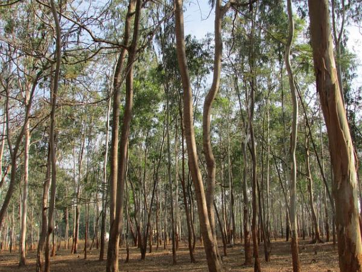

Hola curiosos
El arbol mas rapido en crecer

Los eucaliptos pueden crecer 10 metros en 1 año y pueden llegar a medir más de 60 metros a los largo de su vida.
Los arboles mas viejos
Las secuoyas son los árboles más viejos de la Tierra. Se conoce que viven miles de años, la que es más vieja actualmente se cree que tiene 3.200 años.
Las montañas mas antiguas estan en escocia

Es el caso de las famosas Highlands de Escocia, que son un paisaje asombroso y único, con formaciones de montañas enormes y que se considera que actualmente ya tienen más de 400 millones de años.
Frambuesas colores poco comunes
Las frambuesas pueden ser rojas, azules, amarillas o negras. De hecho, las frambuesas amarillas son consideradas como la variedad más dulce y sabrosa.
Un solo arbol pueden eliminar toneladas de contaminacion
Un solo árbol puede eliminar una tonelada de dióxido de carbono durante toda su vida y entre más rápido crece el árbol, menos tiempo tiene de vida.
Semilla de la manzana venenosa
Las semillas de la manzana contienen glicósidos cianogénicos, es decir, cianuro.
Cuanto tiempo tienen las flores
Las primeras floraciones aparecieron hace unos 140 millones de años, convirtiéndose en el antepasado común de todas las plantas con flores.
Cuantas tipos de flores exinten
De las 270 000 especies de flores que existen en la tierra, unas 35 000 son varias especies de rosas.
Cual es la flor mas chica

Una pequeña lenteja de agua tropical (Wolffia angusta) es la planta con flores más pequeña del mundo. Algunas especies miden menos de 0,5 mm de ancho, incluso cuando están completamente desarrolladas. Se ven en colores como amarillo, naranja, rosa y rojo.